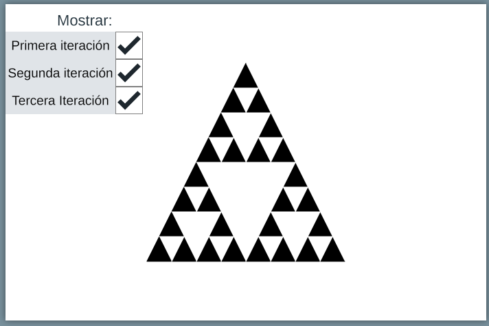
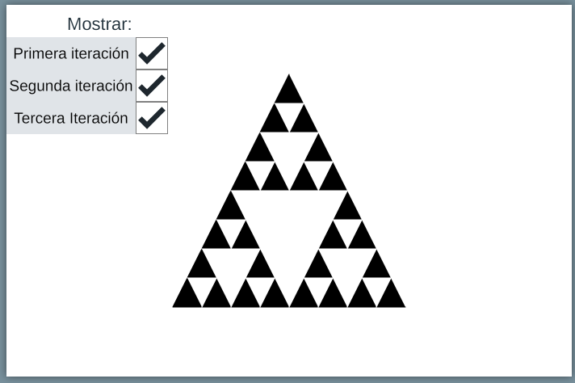
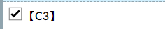
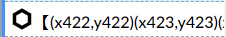
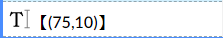

Preparaciones

Resume las propiedades del triángulo de Sierpinski antes de iniciar la construcción.
Pista: Recuerda que los triángulos anidados tienen sus vértices justo en la mitad de los lados de los triángulos más grandes.

Resume las propiedades del triángulo de Sierpinski antes de iniciar la construcción.
Pista: Recuerda que los triángulos anidados tienen sus vértices justo en la mitad de los lados de los triángulos más grandes.
Para la elaboración de esta escena, unicamente se requieren de los siguientes elementos:
|  | Casilla de control |
|  | Polígono |
|  | Texto |
Obra publicada con Licencia Creative Commons Reconocimiento Compartir igual 4.0